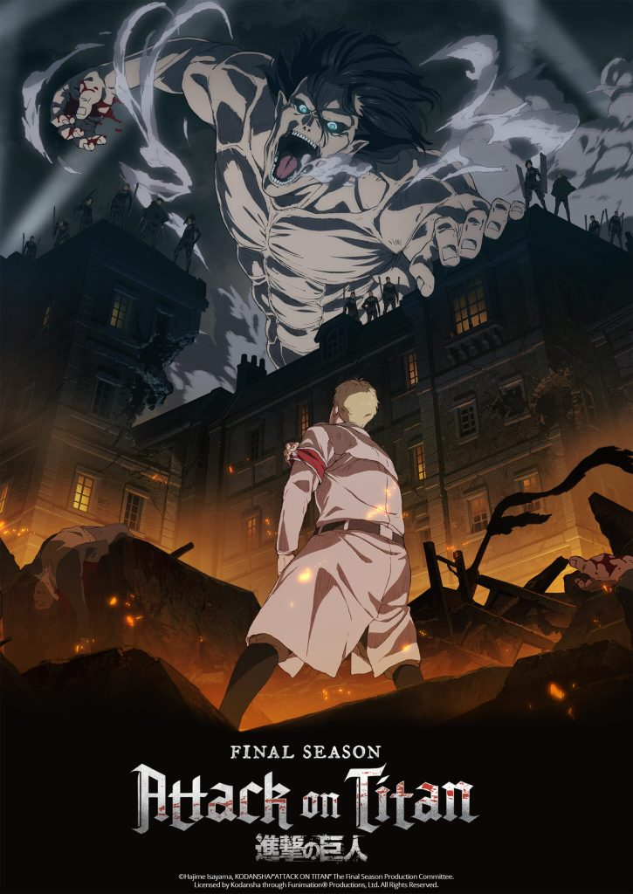

Top 10 Anime

| Ranking | Title | Rating |
|---|---|---|
| 1 |
Attack On TitanIt is set in a world where humanity lives inside cities surrounded by three enormous walls that protect them from the gigantic man-eating humanoids referred to as Titans; the story follows Eren Yeager, who vows to exterminate the Titans after a Titan brings about the destruction of his hometown and the death of his mother.  |
|
| 2 |
Fullmetal Alchemist: BrotherhoodAfter a horrific alchemy experiment goes wrong in the Elric household, brothers Edward and Alphonse are left in a catastrophic new reality. Ignoring the alchemical principle banning human transmutation, the boys attempted to bring their recently deceased mother back to life. Instead, they suffered brutal personal loss: Alphonse's body disintegrated while Edward lost a leg and then sacrificed an arm to keep Alphonse's soul in the physical realm by binding it to a hulking suit of armor. 
|
|
| 3 |
Steins;GateThe self-proclaimed mad scientist Rintarou Okabe rents out a room in a rickety old building in Akihabara, where he indulges himself in his hobby of inventing prospective "future gadgets" with fellow lab members: Mayuri Shiina, his air-headed childhood friend, and Hashida Itaru, a perverted hacker nicknamed "Daru." The three pass the time by tinkering with their most promising contraption yet, a machine dubbed the "Phone Microwave," which performs the strange function of morphing bananas into piles of green gel. 
|
|
| 4 |
GintamaGintama is a story of a handyman named Gintoki, a samurai with no respect for rules set by the invaders, who's ready to take any job to survive. He and his gang, however, are also among the very few who have not forgotten the morale of a swordsman. Wherever they go, all they do is to create troubles. 
|
|
| 5 |
Fruit BasketFruits Basket tells the story of Tohru Honda, an orphan girl who, after meeting Yuki, Kyo, and Shigure Sohma, learns that thirteen members of the Sohma family are possessed by the animals of the Chinese zodiac and are cursed to turn into their animal forms when they are weak, stressed, or when they are embraced by anyone of the opposite sex that is not possessed by a spirit of the zodiac. |
|
| 6 |
HunterXHunterThe story focuses on a young boy named Gon Freecss who discovers that his father, who left him at a young age, is actually a world-renowned Hunter, a licensed professional who specializes in fantastical pursuits such as locating rare or unidentified animal species, treasure hunting, surveying unexplored enclaves, or hunting down lawless individuals. Gon departs on a journey to become a Hunter and eventually find his father. Along the way, Gon meets various other Hunters and encounters the paranormal. 
|
|
| 7 |
Silent VoiceWhen a grade school student with impaired hearing is bullied mercilessly, she transfers to another school. Years later, one of her former tormentors sets out to make amends. 
|
|
| 8 |
Demon SlayerOne day, after resting with a neighbour following a long day, he returns home to find his entire family slaughtered, save for his younger sister Nezuko. He soon discovers she has transformed into a demon, a powerful creature that possesses incredible regeneration and hunger for human flesh. 
|
|
| 9 |
Code GeassSet in an alternate timeline, it follows the exiled prince Lelouch vi Britannia, who obtains the "power of absolute obedience" from a mysterious woman named C.C. Using this supernatural power, known as Geass, he leads a rebellion against the rule of the Holy Britannian Empire, commanding a series of mecha battles. 
|
|
| 10 |
Jujutsu KaisenYuji Itadori, a kind-hearted teenager, joins his school's Occult Club for fun, but discovers that its members are actual sorcerers who can manipulate the energy between beings for their own use. He hears about a cursed talisman - the finger of Sukuna, a demon - and its being targeted by other cursed beings. 
|
|